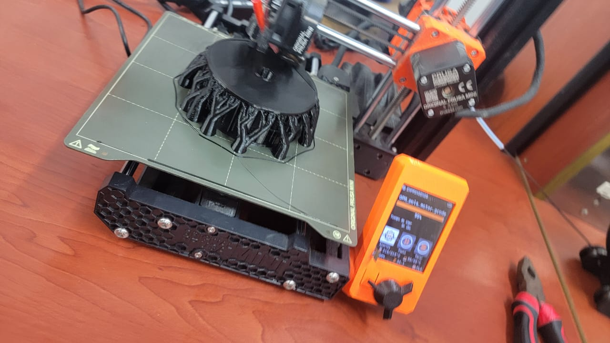
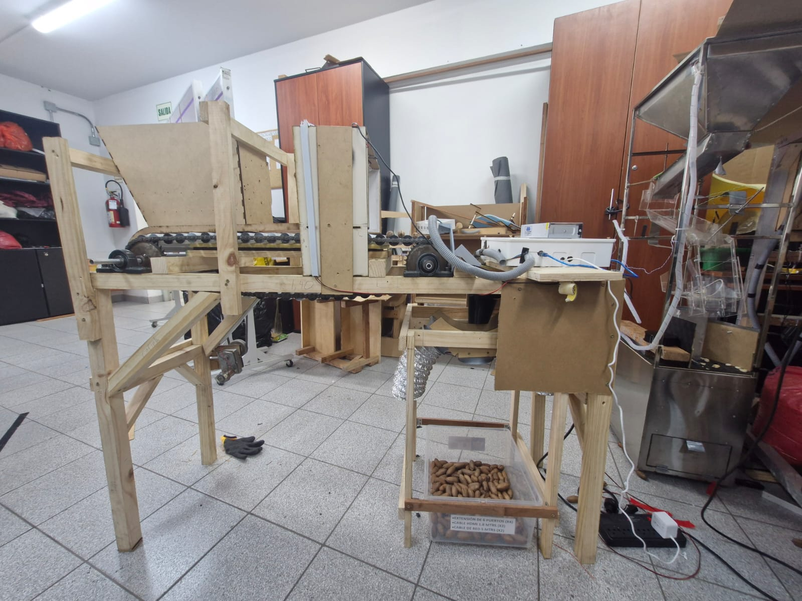
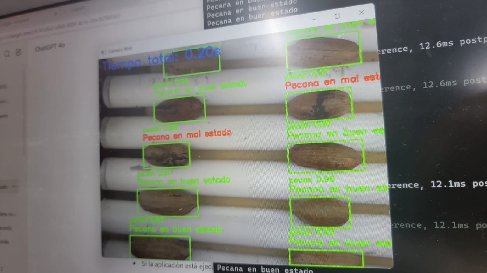
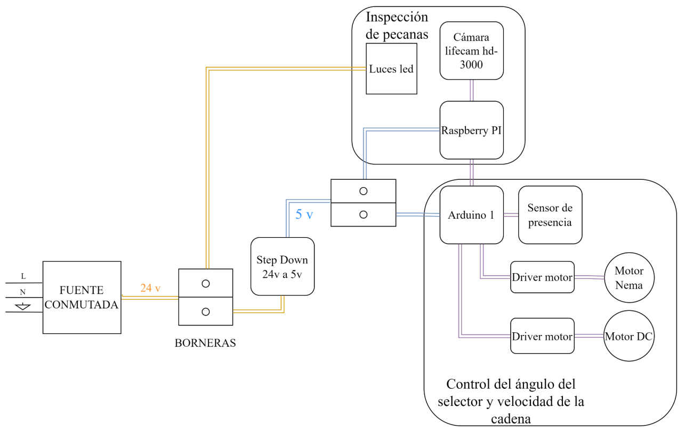
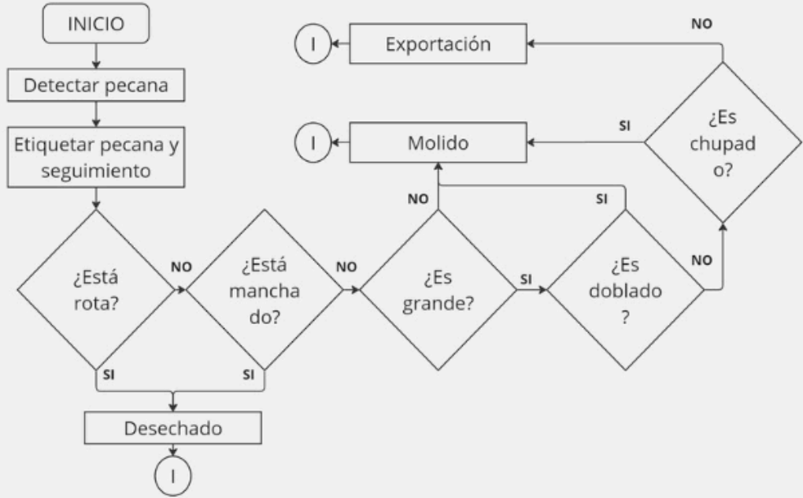
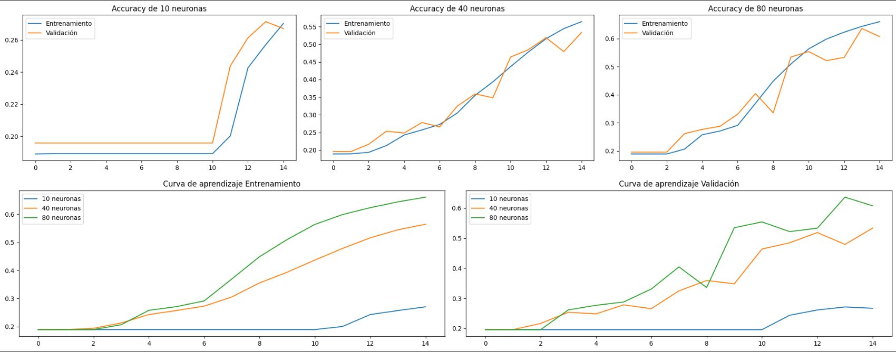
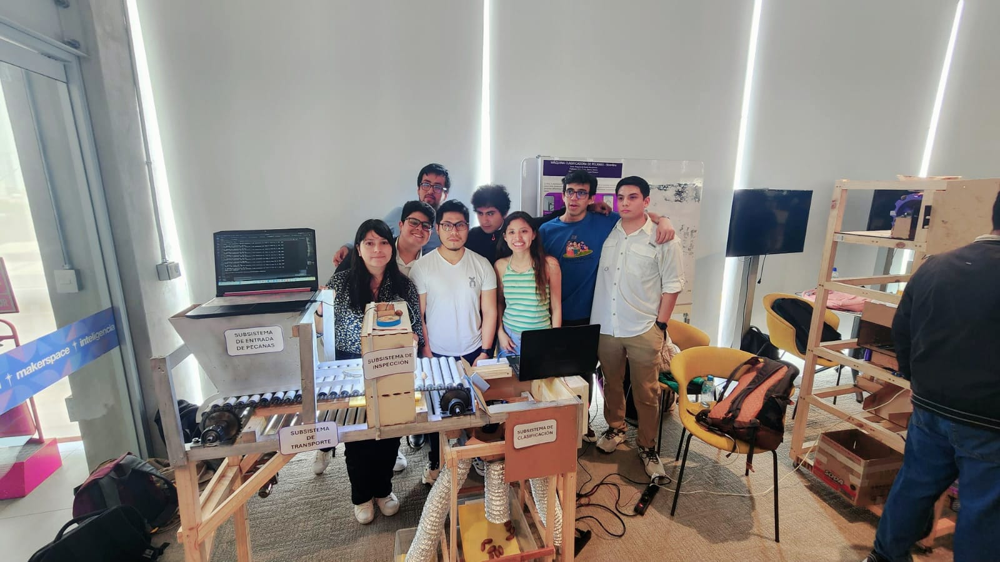
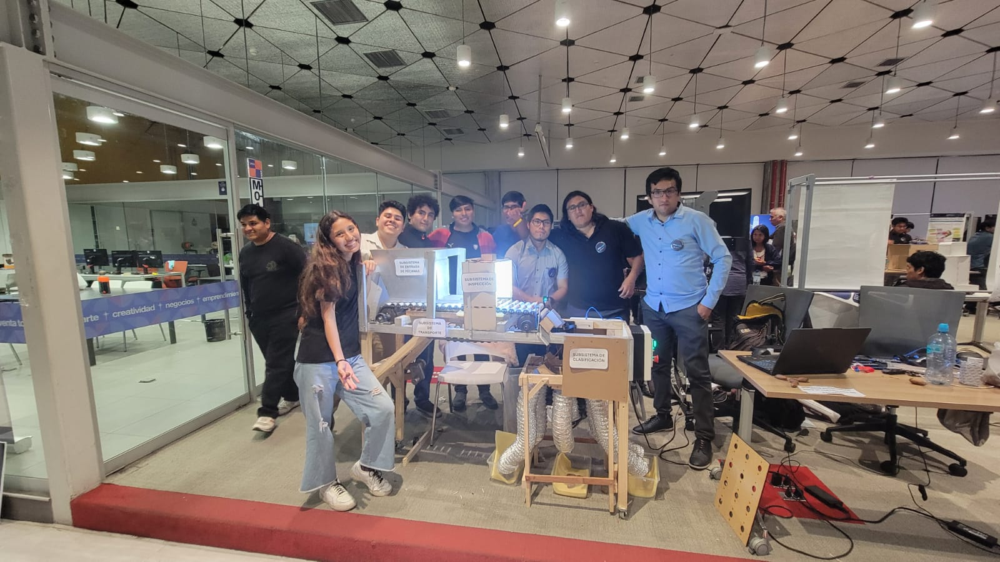

Galería

Visita al pando

Impresión de Componentes de Trasmisión

Prototipo Real
Prueba de Funcionamiento

Validación de Computer Vision

Esquematico Electrico

Logica de clasificación

Prueba con Distintos Modelos

Prototipo impreso en 3D

Foto de equipo de Desarrollo 2